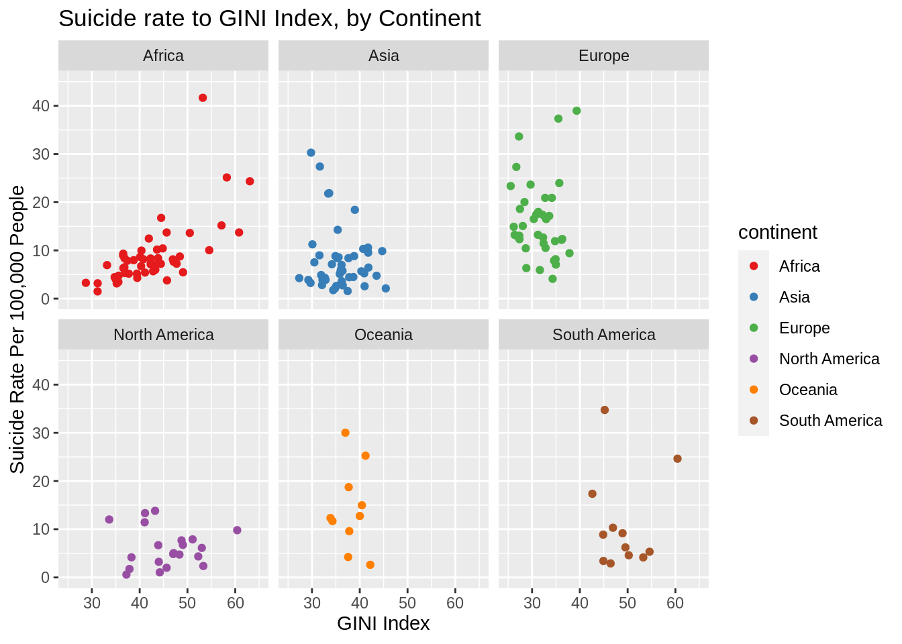
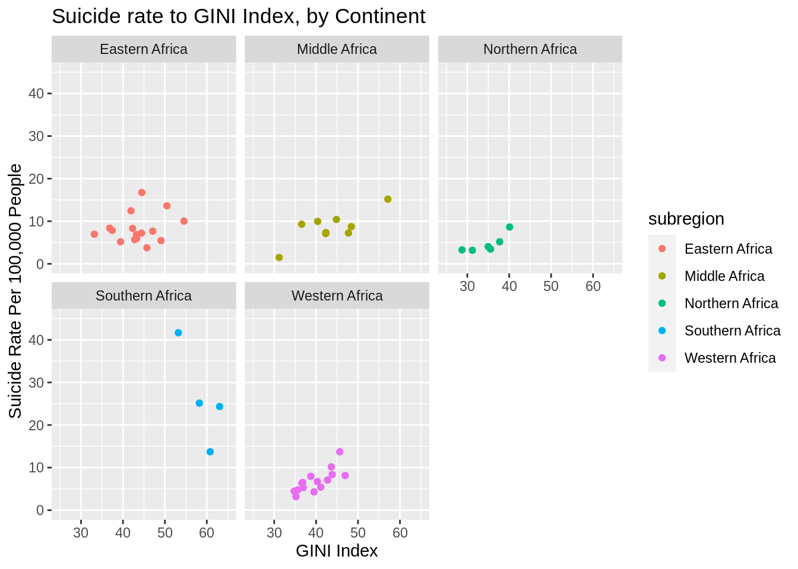

2 Income Inequality to Quality of Life
In this section, we focus on how each quality of life variable is associated with income inequality.
2.1 Education
Academic education is thought to be correlated with job opportunity, and by extension potentially higher income. Primary education in particular occurs during a critical time in individuals lives. For some, this early education is more-so a luxury than a necessity. We therefore considered primary school completion rate as an indicator for quality of life and potential income inequality factor.
Figure 2.1 illustrates said relationship. Primary school completion is measured as the ratio of new entrants to all age-relevant individuals for the last grade of primary school. This quantification method fails to account for individuals who dropout in the final year of primary education. As inequality is an overarching theme of interest to us, we focused on the primary school completion rate for boys compared to their girl counterparts - dubbed, “Eucation discrepancy.”
Figure 2.1: Income Inequality to Education Inequality
2.2 Birth Rate
Education inequality and birth rate appeared to be positively correlated in the heatmap shown in the introduction. However, before studying the relationship between these two variables, we first focused on identifying any associations between birth rate and income inequality.
In the scatter plot below:
- each point represents a country,
- the color of each point represents the corresponding continent,
- the x-axis represents the birth rate in babies per woman, and
- the y-axis represents income inequality via the Gini coefficient.
Given the knowledge that low income populations tend to have higher birth rates than high income populations, we also used the size of each point to condition on income within each country.
Figure 2.2: Income Inequality to Birth Rate
All plots are interactive. In the scatter plot above, you can select and deselect components in the plot. Double-clicking on a color in the legend will display only the points of that color, while single-clicking on a color in the legend will add or remove the corresponding points.
The scatter plot confirms that there exists a positive correlation between birth rate and income inequality, on average. However, it reveals a few pieces of information that complicated our interpretation:
- The positive association between birth rate and income inequality does not necessarily hold across a single continent. When we isolate countries from only Africa or only Asia, we observe a negative association (i.e. a higher birth rate tends to be associated with lower income inequality).
- The distribution of the points in the plot are clustered by continent.
- The countries with low birth rates tend to have higher incomes than those with high birth rates.
Thus, while there is an overall positive association between birth rate and income inequality, points 1 and 2 indicate that cultural and continent-wide variations are present. Likewise, point 3 indicates that income is a potential confounding variable that could be driving the initial trend we observed between birth rate and income inequality.
2.3 Suicide Rate
Although not typically associated with income inequality, a disproportionate number of suicides occur in low-to-middle income countries, approximately 75% of the global total. (‘Preventing Suicide: A Global Imperative’,2014,World Health Organization, https://apps.who.int/iris/bitstream/handle/10665/131056/97892?sequence=1,ISBN 978 92 4 156477 9.) In this section, we will be examining whether or not income inequality has an additional effect on suicide rates.
Suicide is a complicated and delicate subject, influenced by a plethora of cultural, religious, and social factors. These factors can have a strong influence on reporting, as individuals or government bodies may under-or-misreport incidents. This may partially explain the gapminder.org dataset’s somewhat odd definition, “Mortality due to self-inflicted injury”, which is notably missing any element of intent. Although outside the scope of this report, this should be borne in mind.
The following graph shows suicide rate (per 100,000 people) as a function as GINI, broken down by continent. The three countries in the ‘Seven Seas’ continent are included with the continent of their subregion.
data.melt.avg.temp<-data.melt.avg
data.melt.avg.temp$continent[data.melt.avg.temp$country=='Maldives']<-'Asia'
data.melt.avg.temp$continent[data.melt.avg.temp$continent=='Seven seas (open ocean)']<-'Africa'
data.melt.avg.temp<-subset(data.melt.avg.temp,is.na(data.melt.avg.temp$continent)==FALSE)
region.color.temp<-c("#E41A1C", "#377EB8", "#4DAF4A", "#984EA3", "#FF7F00", "#A65628")
plot<-ggplot2::ggplot(data=data.melt.avg.temp) +
ggplot2::geom_point(mapping=ggplot2::aes_string(
x='gini_avg',
y='suicide_avg',
col='continent'
)) +
ggplot2::ggtitle(paste('Suicide rate to GINI Index, by Continent',sep='')) +
ggplot2::xlab('GINI Index') + ggplot2::xlim(25,65)+
ggplot2::ylab('Suicide Rate Per 100,000 People') + ggplot2::ylim(0,45)+
ggplot2::guides(size="none",alpha="none") +
ggplot2::scale_color_manual(values = region.color.temp,na.translate=FALSE)
plot + ggplot2::facet_wrap(~continent,nrow=2,ncol=3)
From the above scatterplots, we can see that the relationship between suicide rate and income inequality is inconsistent between continents. Although there are a few subregions where we see strong (or weak) correlations between suicide rate and income inequality, the only continent where we see an appreciable correlation between the two variables is Africa. This correlation holds when making a similar examination of African subregions.
data.melt.avg.temp<-subset(data.melt.avg,continent=='Africa')
plot<-ggplot2::ggplot(data=data.melt.avg.temp) +
ggplot2::geom_point(mapping=ggplot2::aes_string(
x='gini_avg',
y='suicide_avg',
col='subregion'
)) +
ggplot2::ggtitle(paste('Suicide rate to GINI Index, by Continent',sep='')) +
ggplot2::xlab('GINI Index') + ggplot2::xlim(25,65)+
ggplot2::ylab('Suicide Rate Per 100,000 People') + ggplot2::ylim(0,45)+
ggplot2::guides(size="none",alpha="none")
#ggplot2::scale_color_manual(values = region.color.temp,na.translate=FALSE)
plot + ggplot2::facet_wrap(~subregion,nrow=2,ncol=3)
Although at this point we are getting down to comparatively small sample sizes, the correlation between suicide rates and income inequality continues to hold for all but the smallest subregion, Southern Africa. Southern Africa, however, is an unusual case that bears some specific attention.
Southern Africa contains the two countries in this dataset with the highest suicide rates: Lesotho and Eswatini/Swaziland. Lesotho has an average suicide rate of 61/100,000 over the last 20 years, a value so high that, when included, it makes the y scale nigh on unreadable. Although Lesotho itself has a fairly low GINI, approximately 48, it is unique geographically in that it is landlocked by South Africa. South Africa has a fairly high GINI (63), and an average income of ~12,000, compared to Lesotho’s ~2300. The combined proximity and differences of these two countries suggests that it should not necessarily be taken as a counter-example to the rest of the continent. Eswatini is in a similar, although less exaggerated, position.
That said, outside of Africa there is very little consistent relationship between income inequality and suicide rates.